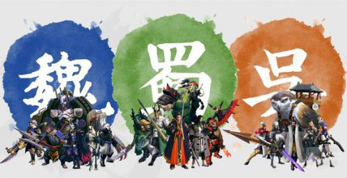

2015.07.29 15:52:08 来源: 蚕豆网 作者:蚕豆网 ( 0 条评论 )
肉盾选择
百将行这款三国动作卡牌游戏中目前推出了36位武将，大家可以选择4个进行搭配，不过对于新手而言这款游戏的武将怎么选择是比较困难的，不能只看星级也不能只看技能，下面蚕豆网小编为大家带来了新手攻略，关于前期搭配和发展为大家详细介绍。

肉盾选择
廖化是平民的第一选择，有个复活打千里走单骑时有奇效，而且配合关羽的无双技伤害爆炸，廖化一个技能全推后面去，关羽一个大刀劈下来除了肉盾全部清场，而且这个前期有送，可以很快的升星。5星级推荐。
张飞目前我没有，打JJC能看见张飞的技能很强大。5星级推荐。
其他的肉盾，不是很推荐毕竟廖化上手就能有全力培养廖化就好，后期入手张飞打JJC，对平民而言两个肉盾就够了。
物理输出
物理输出
关羽不用说第一选择，单体斩杀伤害奇高，这个可以攒斩杀值，而且无双技输出爆炸，不过缺点就是只能打后排，不过配合廖化的无双技，可以完美配合，我只能说谁用谁知道，现在推图的第一组合就是廖化加关羽，我就是靠他俩40级3星推完精英普通第六章，关羽不能再夸了再夸要被和谐，必备卡牌，目前推图JJC的第一卡牌，而且入手难度不打，就算抽不到也可以换出来升星也非常快。推荐度没有就赶紧搞一个吧，必备卡牌没有之一。
由于打猛将需要两个物理输出，第二个推荐黄忠输出高，目前只用在打猛将上。推荐度3星。没有黄忠的庞德也可以代替，庞德的有点只是上来就送升星快，毕竟只是打打猛将用处不大。
法系输出
法系输出
第一选择诸葛亮，闪电和东风都是伤害不输的伤害技，大招能免疫一些伤害还有一定的控制，无双技伤害也不俗，各方面都很完美。推荐度5星。
张宝，有点技能全是输出技，伤害也不俗，入手难度低，碎片好刷，缺点脆皮，没控制。推荐度4星。
颜良，再次大力推荐的卡牌，大招伤害高，有单体控制而且伤害也不低，入手难度低，打JJC和打副本都有奇效。推荐度5星。
阵容选择1
阵容选择
竞技场虐心组合 关羽+张宝+诸葛亮+曹操
点评： 这套阵容可以说是比较让人无语的一套组合了。这套组合集输出，控制，强杀 于一体。本次测试就已经有很多人适用这套组合了。
推荐理由：
1 关羽的大招秒杀+张宝各种输出技能+诸葛亮和曹操的控制。 是一套能以弱胜强的 强力组合。
2 这套组合除了诸葛亮外 其他将魂碎片获取途径比较简单。
3 本套阵容偏 法系 组合，虽然 在百将行中没有缘分羁绊这种东西，但是在武将的技能中还是有一些互补的东西，我称之为隐藏缘分系统。 比如 张宝的觉醒技能与诸葛亮的激将 都是可以对敌人范围内进行群体扣血。 曹操的觉醒技能又会给诸葛亮和张宝 额外的增加攻击力。
阵容选择2
第二套 张梁+张角+张宝+诸葛亮
点评： 也是本次测试新进 发现的一套比较难对付的阵容，当然 前提是出了了50级觉醒技能之后。
推荐理由：
1 张梁算是个攻防一体的强力肉+后三个强力的法力输出。也是比较容易以弱胜强的。
2 这套组合 更为 亲民，将魂的获取比较简单。张氏三兄弟比较容易满五星的。
3 这套组合一样具有隐藏缘分系统。 张角的所有技能都是召唤尸体进行自爆攻击，而张梁的觉醒技能是只要有人死亡就会收取精华，增加生命上限并回复一定生命。 好吧死体自爆也算死亡 能给张梁回血。。你造么??? 这就相当于于 一个T 加三个输出。外带个奶妈 跟人pk. 感觉好无赖有没有~
阵容选择3
第三套 成吨输出伤害 组合 周仓+孙尚香+张宝+诸葛亮
点评： 这套组合也是目前比较流行的一套输出组合了，不同于关羽组合的单秒，在占据先手的情况下，完全可以实现对敌方进行群秒。
推荐理由：
1 在百将行中周仓的定位是法T，但是他也具有很强大法伤能力，大招的实际效果 基本上是减少敌人全体一半血量五秒钟。本套阵容正是根据这一点配置的
2 孙尚香、张宝、诸葛亮 都是具有强大的群体杀伤能力，虽然孙尚香给敌人加怒气的速度要快一些，但是在本套阵容中的输出能力要比这些负面影响要大的多
3 本套阵容实际上是一套 强大的纯输出阵容，面对物理攻击为主的菜刀队时优势还是比较明显的
阵容选择4
第四套 秒后排组合 张飞+关羽+太史慈+袁绍
点评： 这套可以说是经典的刺客组合了，从后面往前面推起，专杀输出，留下肉T 虐着玩。
推荐理由：
1 首先要说明的一点是 这套阵容最好是在玩家达到50级以后再利用积累的资源培养起来，因为袁绍在刷图过程中的作用比较小。后期可以觉醒的时候培养起来也很快的，但是平时要注意积累碎片。
2 一般来说最后排武将都是血最少的武将 关羽 太史慈 袁绍同时使用自动技能攻击就有可能秒杀对方控制或者输出，如果出主动技能 更是会接连秒杀对方脆皮职业。
3 最后一点就是 需要注意的是 关羽的大招和袁绍的觉醒技是针对 敌方血量最少将领 而不是必然的最后一位将领。
升级战力提升
升级攻略
就是一边推图一边刷装备，等级上去战力也上去了。朋友们不要盲目的去一直推图哦，不是说你打到了第几章第几章就狠厉害了，想知道自己厉害不厉害去竞技场溜达溜达，看看有多少人可以虐你的。
战力提升
等级到了能穿装备了就去刷装备穿上，这个一点都等不了的。因为一个英雄穿完6件装备之后就可以进阶从白色到绿色到蓝色到紫色。只有装备满了之后才可以的哦。然后就是英雄升星了，这个有点困难，需要碎片，并且需要的还很多。1星—2星需要同英雄的碎片20个，2—3需要50个，3—4需要100个，4—5目前不清楚，保守估计需要200个。有压力吧，哈哈。进阶需要的碎片可以通过精英副本获得，也可以开宝箱获得，建议金币多的直接10连抽，容易出。钻石10连抽也会出，只能看运气了。其次就是3个商店有大把的英雄碎片兑换，有的需要金币有的需要钻石，如果没有想要的碎片，只能等下一个时间点自动刷新，或者用钻石刷新了。竞技场商店也有碎片产出，我刷新了一次，感觉还是那几个英雄的碎片...
除了装备，英雄进阶与升星之外，还有一个装备精炼系统。就是装备升星，这个只需要金币和精炼石就可以了。精炼石可以从分解没用的装备获得，也可以在商店神秘商店获得，竞技场也可以兑换。